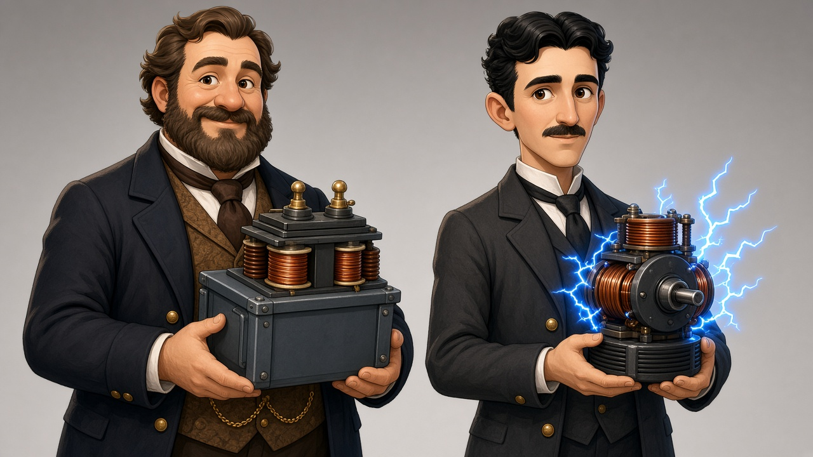
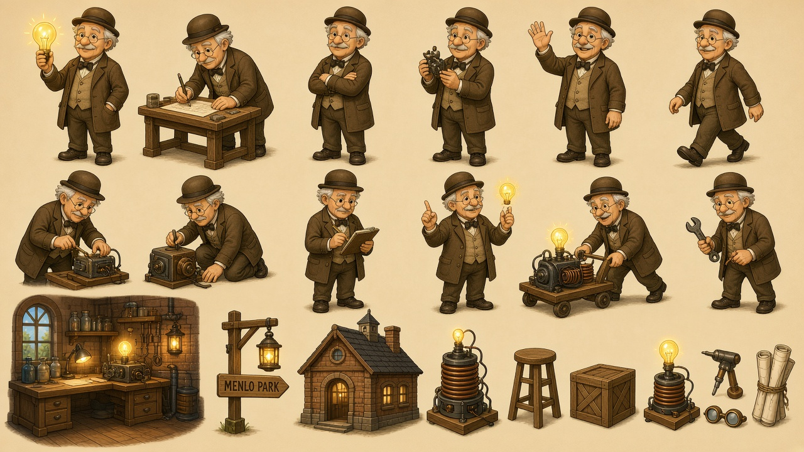
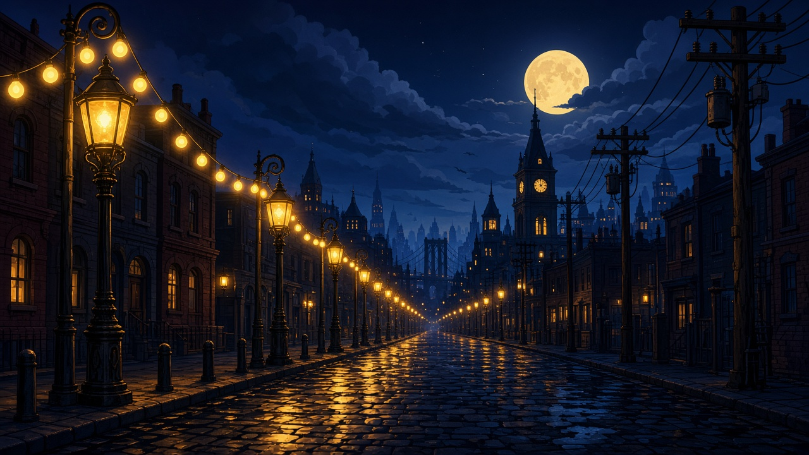
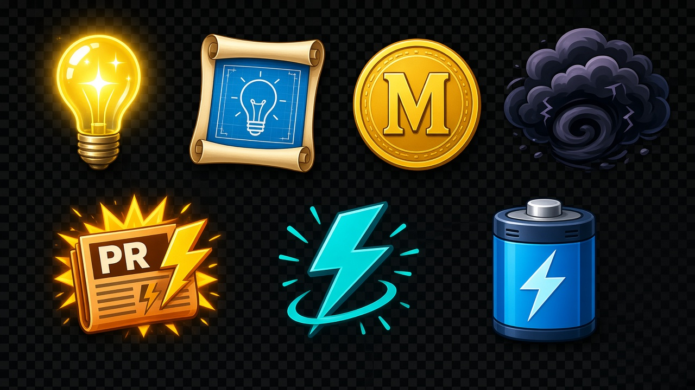
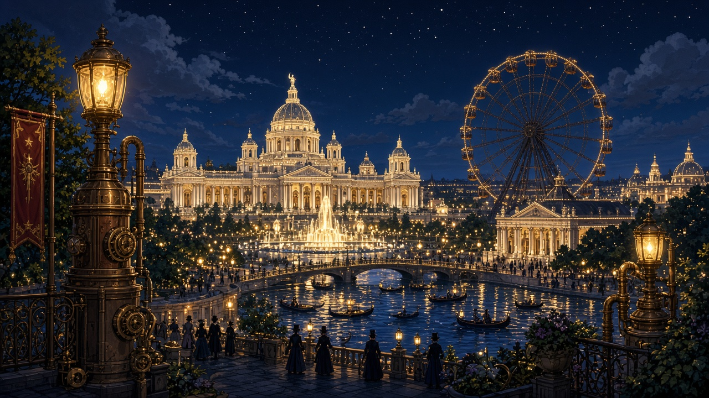

Quarta professionale · Tecnologie elettriche e elettroniche
Edison e la guerra delle correnti
Visual story con le illustrazioni del materiale: tocchi Continua, leggi dialoghi brevi e ripassa il film Edison — L'uomo che illuminò il mondo (2017) — Menlo Park, Manhattan, Tesla, Chicago, kinetoscopio.
«La luce deve durare — non solo accendersi.»





-
Menlo Park
La lampadina che resta accesa.
Elettricità → luce nel filamento.
-
Manhattan · CC
Lampioni in corrente continua e Morgan.
CC = stesso verso nel conduttore.
-
Guerra delle correnti
Westinghouse rifiutato; brevetti e stampa.
Due scelte didattiche in storia.
-
Tesla · CA
Tesla con Westinghouse; alternata e trasformatori.
CA 230 V · 50 Hz oggi in Italia.
-
Chicago 1893
L'Expo illuminata da Westinghouse/Tesla.
-
Kinetoscopio
Edison verso il cinema.